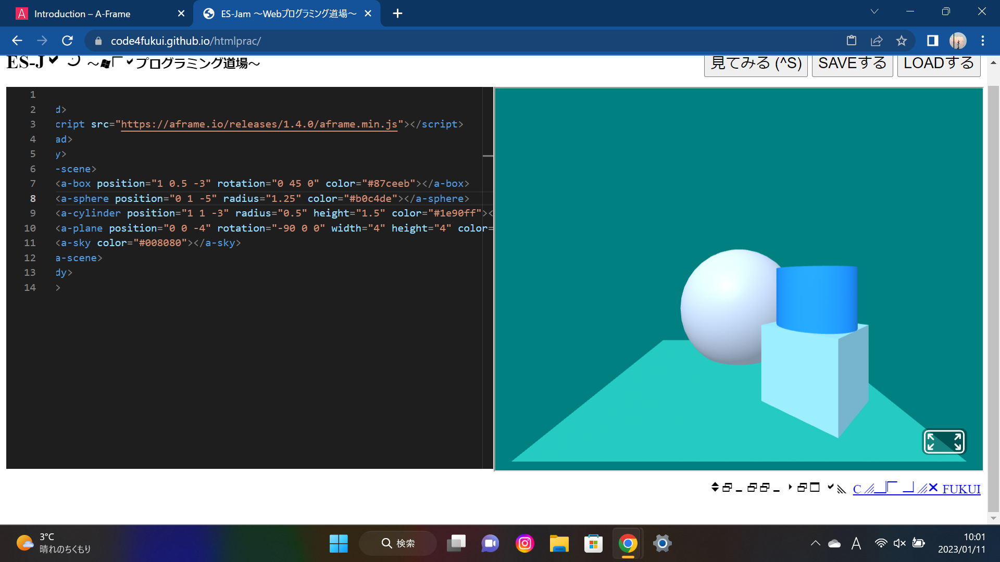
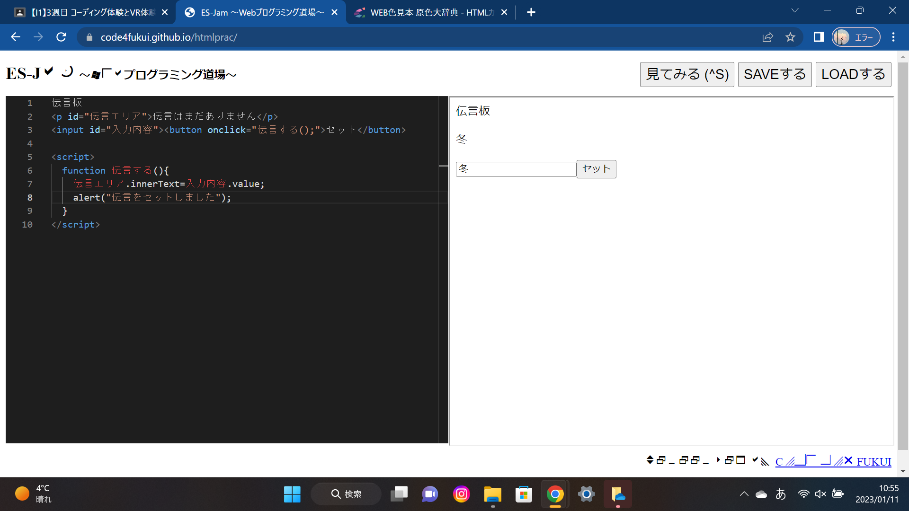

第3週目
3-1 JavaScript体験：VR空間を作る

3次元モデル
1.内容
自分でVR空間を作る
2.感想
VR空間にある物体の色はコード，物体の位置は座標で表すということが理解できた．
3-2 JavaScript体験：伝言プログラムを作る

伝言板
1.内容
Webプログラミング道場というアプリを使い伝言プログラムを作る
2.感想
伝言板を作るにはプログラム内にたくさんの記号を使うことが分かった．半角でないと表示されなかったり，間が空いてないと反応しなかったりすることがありあまり進まなかったが，確認しながらプログラムすることによって間違いがなくなると思った．
3-3 JavaScriptプログラムの３次元空間の体験
1.内容
作成したVR空間に似た空間で実際に場所を移動したり，物を移動させたりする技術を学ぶ
2.感想
たくさんテレポートをすると空間から出てしまう．その時は反対方向に戻れば元の空間に戻れる，ということを理解できた．